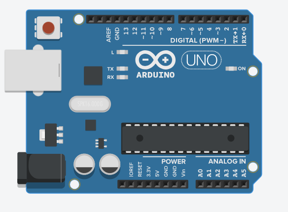

Diccionario
IoT

- Definición
-
Es la abreviatura del término en inglés "Internet of Things" cuya traducción es "Internet de las Cosas". Son dispositivos que llevan incorporados sensores, software y otras tecnologías con el fin de conectarse e intercambiar datos con otros dispositivos y sistemas a través de Internet
- Ejemplo
-
Puedo controlar el frigorífico de mi casa a través de mi teléfono móvil gracias al Internet de las cosas.
Arduino

- Definición
-
Plataforma de creación de electrónica de código abierto, la cual está basada en hardware y software libre, flexible y fácil de utilizar para los creadores y desarrolladores.
- Ejemplo
-
En la clase de computación y robótica he conectado unas luces led a mi placa Arduino.